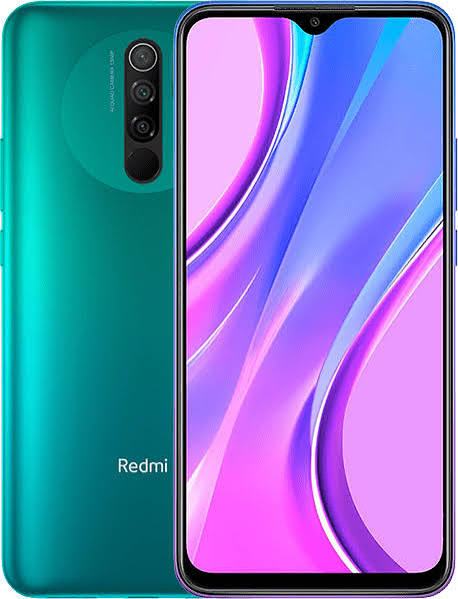

Redmi 9A - легендарный бестселлер среди смартфонов, истинный король ультрабюджетного гейминга начального уровня. Этот аппарат создан для тех, кому не нужно звонить и кто никуда не торопится.
Кратко о характеристиках: процессор MediaTek Helio G25, экран 6,53" IPS с разрешением HD+, 2/32 ГБ памяти, основная камера 13 Мп, аккумулятор 5000 мА·ч с зарядкой 10 Вт, разъём micro-USB и 3,5-мм выход для наушников.
Минусы:
Плюсы: